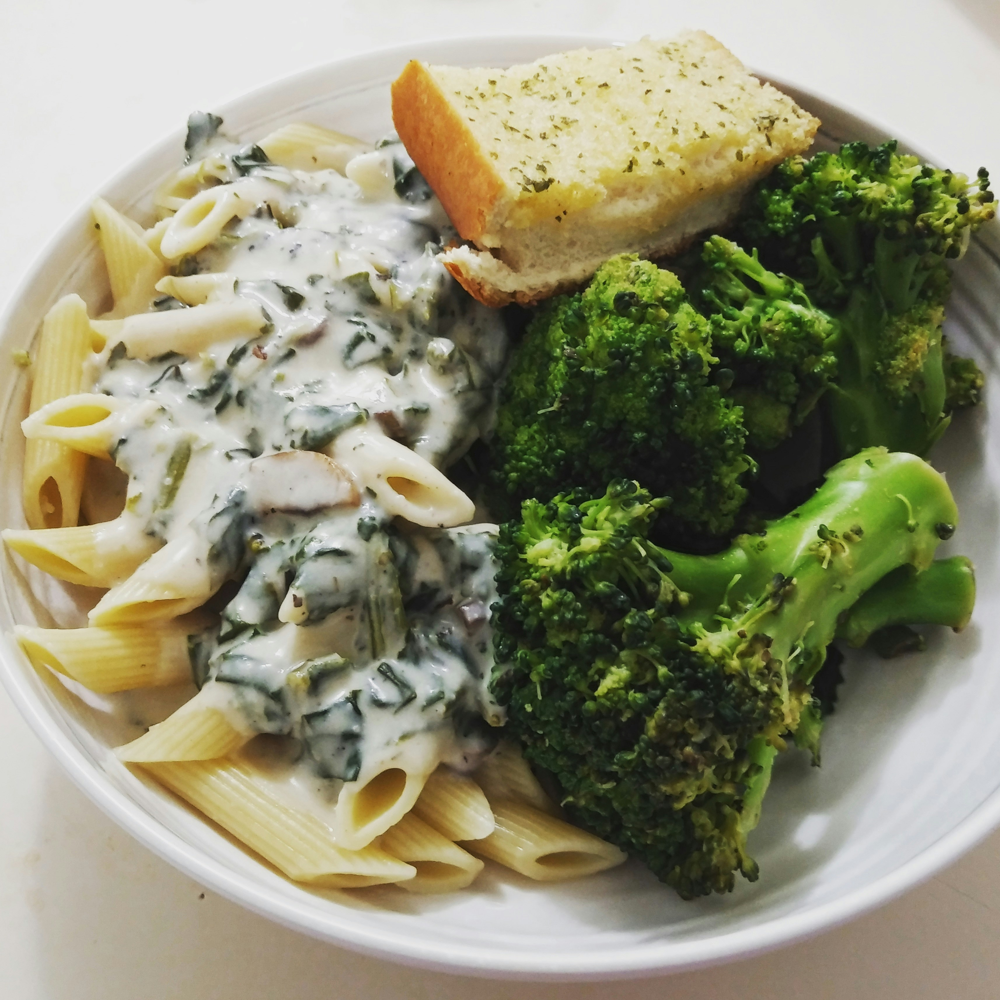

Broccoli Alfredo Pasta

Description
Broccoli Alfredo Pasta is a delightful and creamy dish that combines tender pasta with fresh broccoli, enveloped in a rich Alfredo sauce. This dish is not only comforting but also a great way to incorporate vegetables into your meal, making it appealing to both adults and children.
Ingredients:
- 4 ounces farfalle pasta
- 2 cups fresh broccoli florets
- 2 tablespoons unsalted butter
- 1/2 cup heavy cream
- 3/4 cup freshly grated Parmesan cheese (see Note)
- 1/2 teaspoon minced garlic
- 1 pinch ground nutmeg, or to taste
- salt and freshly ground black pepper to taste
- fresh parsley sprigs for garnish (optional)
Steps:
-
Bring a large pot of lightly salted water to a boil. Cook farfalle pasta at a boil, stirring occasionally, until tender yet firm to the bite, about 12 minutes. Remove to a colander; reserve the pasta water for later use.
-
Add broccoli to a microwave-safe container along with 1/4 cup water. Cover and cook on High until bright green and tender with a bite, about 4 minutes. Drain; season with salt. Keep warm.
-
Meanwhile, melt butter in a skillet or saucepan over low heat. Stir in cream and allow to simmer, stirring often, 3 to 4 minutes.
-
Add cheese and garlic, stirring continuously, until cheese is melted. Stir in nutmeg and remove from heat. sauce is too thick, stir in a bit of reserved pasta water. Season to taste with salt and pepper.
-
To serve, combine cooked pasta, cooked broccoli, and sauce. Garnish with fresh parsley sprigs, if desired